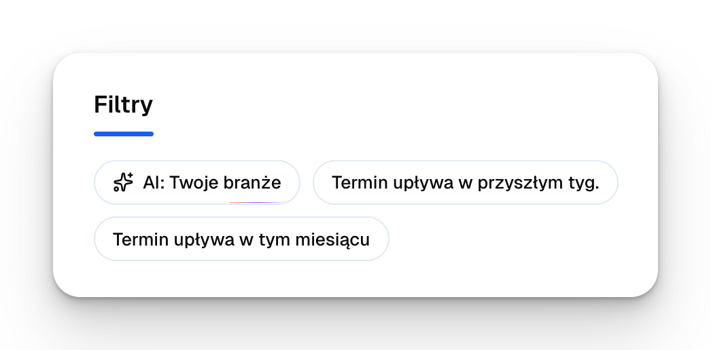
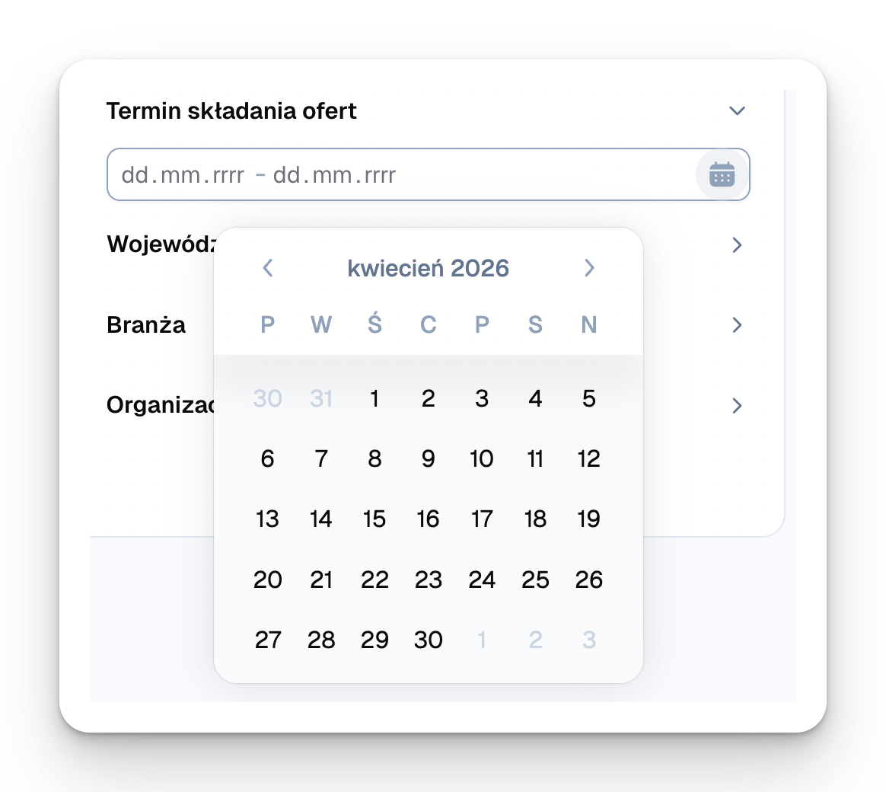
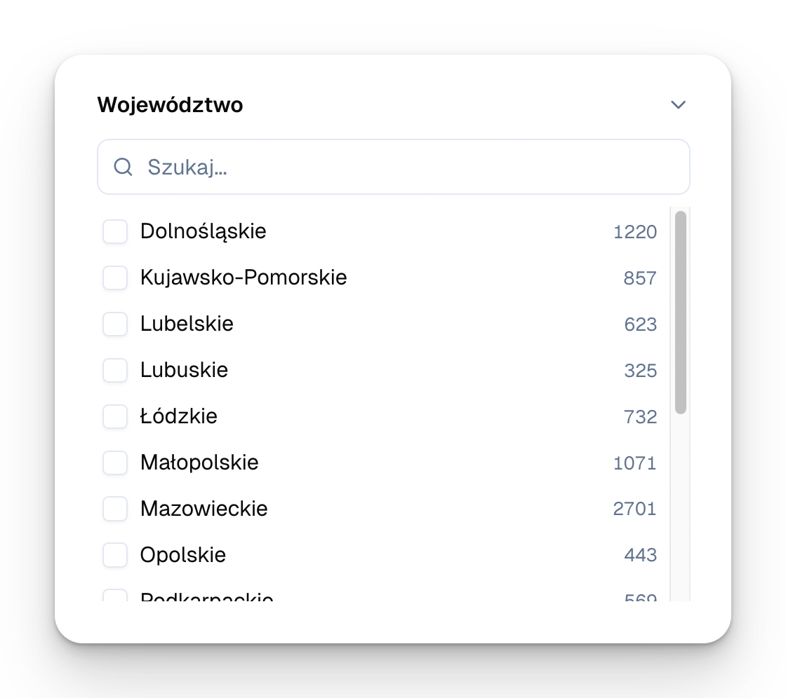

Czego się nauczysz
- Jak korzystać ze strony głównej (Dashboard)
- Jak poruszać się po Mimirze używając panelu bocznego
- Jak zarządzać swoimi przetargami z poziomu listy i kalendarza
- Jak określić ustawienia ogólne i dot. Twojego zespołu
5.1 Dashboard (Strona główna)
Strona główna to pierwszy ekran widoczny dla Ciebie po zalogowaniu. Znajdziesz na nim podsumowanie najważniejszych informacji dot. Twojego udziału w przetargach publicznych:
- Ile nowych przetargów rekomendowaliśmy Ci w ostatnim tygodniu
- W ilu przetargach termin składania ofert upływa w ciągu kolejnych 7 dni
- Jakie są najbliższe terminy składania ofert (wraz z możliwością ich sprawdzenia w kalendarzu)
- Jakie przetargi ostatnio rekomendowaliśmy (wraz z możliwością ich sprawdzenia w skrzynce odbiorczej)
- Statystyki Waszego udziału w przetargach publicznych:
- w ilu postępowaniach Mimira rekomendowała udział
- w ilu postępowaniach zdecydowaliście się wystartować
- w ilu postępowaniach Mimira przygotowała dla Was ofertę
- w ilu postępowaniach złożyliście oferty
- w ilu postępowaniach wygraliście zamówienie publiczne

5.2 Panel boczny
Po lewej stronie platformy znajdziesz panel boczny ułatwiający nawigację pomiędzy sekcjami:
| Sekcja | Co tam znajdziesz |
|---|---|
| Strona główna | Dashboard z podsumowaniem najważniejszych informacji |
| Wyszukiwarka przetargów | Dostęp do pełnej bazy przetargów zebranej przez Mimirę, którą możesz przeszukać z wykorzystaniem filtrów i słów kluczowych |
| Skrzynka odbiorcza | Przetargi dopasowane do Twojego profilu wyszukiwania |
| Twoje przetargi → Lista | Przetargi, do których podjęliście decyzję o udziale (z pomocą Mimiry lub samodzielnie) |
| Twoje przetargi → Kalendarz | Przystępne zestawienie terminów składania ofert i zadawania pytań do postępowań rekomendowanych przez Mimirę |
| Profile wyszukiwania | Opisy działalności Twojej firmy, na podstawie których Mimira rekomenduje konkretne przetargi i analizuje je wg Twoich kryteriów |
| Dokumenty | Miejsce na wgranie dokumentów pomocnych w przygotowaniu ofert przetargowych (odpis z KRS, certyfikaty, referencje) |
| Ustawienia | Dodawanie nowych użytkowników, zarządzanie subskrypcją, inne zmiany na koncie |

5.3 Twoje przetargi — Lista
Kliknij „Twoje przetargi → Lista", żeby zobaczyć wszystkie zapisane przetargi (trafiają tu ze Skrzynki odbiorczej lub Wyszukiwarki).

Każdy przetarg ma przypisany status, który możesz zmienić w dowolnym momencie. Kliknij status przy przetargu, żeby go zmienić.

Co oznaczają poszczególne statusy:
| Status | Opis |
|---|---|
| Samodzielny udział | Przetarg dodany do listy bez generowania oferty przez Mimirę |
| Przygotowanie dokumentów ofertowych | Pracujemy nad dokumentami lub czekamy na dokumenty uzupełniające od Ciebie |
| Dokumenty przygotowane | Dokumenty ofertowe są gotowe, czekają na Twoje działanie |
| Złożono ofertę | Oferta została złożona przez Twoją firmę. Uwaga: ten status aktualizujesz ręcznie |
| Wygrana / Przegrana / Zakończono | Wynik przetargu. Uwaga: ten status aktualizujesz ręcznie |
| Odrzucono | Przetargi odrzucone przez Ciebie z poziomu skrzynki odbiorczej |
| Anulowane | Postępowanie anulowane przez zamawiającego. Ten status aktualizujemy automatycznie |
Poza tym na liście przetargów możesz samodzielnie edytować:
- finalną wartość Waszej oferty
- wartość oferty, która wygrała w tym przetargu
- notatki wewnętrzne
- przypisanego użytkownika (osoba odpowiedzialna za przetarg po Waszej stronie)
5.4 Twoje przetargi — Kalendarz
„Twoje przetargi → Kalendarz" pokazuje terminy w znanym układzie kalendarza.

5.4.1 Terminy i źródła przetargów do wyświetlenia
W kalendarzu możesz wyświetlić terminy składania ofert, terminy zadawania pytań lub wybrać konkretne źródła przetargów, odnośnie których chcesz wyświetlić dane:
- skrzynka odbiorcza — dopasowane przetargi
- Twoje przetargi — przetargi, dla których przygotowujesz ofertę lub przesunęliście do zakładki „Twoje przetargi" z innym statusem
- odrzucone przetargi
- Twoje wydarzenia — przypomnienia dodane przez Ciebie ręcznie
Kolor punktów dot. danego przetargu odpowiada kolorowi statusu: niebieski = samodzielny udział, żółty = oferta w przygotowaniu przez Mimirę itd.

5.4.2 Widoki kalendarza
Kalendarz możesz też wyświetlić z widokiem całego miesiąca, tygodnia lub w formie harmonogramu.

W widoku tygodnia możesz skupić się na najbliższych upływających terminach z uwzględnieniem konkretnych godzin.

Podobną funkcję pełni widok harmonogramu — w tym wypadku to lista (analogiczna do widocznej na stronie głównej Mimiry).

5.4.3 Szczegóły przetargu i przypomnienia
Aby wyświetlić szczegóły danego przetargu, po prostu najedź na wybrany termin, a pojawi się krótkie podsumowanie i status danego przetargu.

Z tego poziomu możesz też zapisać wydarzenie z podanym terminem w swoim kalendarzu Google lub Outlook.
Jeśli chcesz zapamiętać termin, którego Mimira nie zamieściła w kalendarzu, możesz też utworzyć własne przypomnienie.

5.5 Ustawienia ogólne
Ustawienia ogólne umożliwiają Ci:
- edytowanie danych Twojego profilu
- zresetowanie hasła dostępu do platformy
- ustawienie, jakiego rodzaju maile chcesz od nas otrzymywać

5.6 Ustawienia — zarządzanie zespołem
Jeśli w Twojej firmie ktoś jeszcze pracuje z przetargami, możesz dodać go do firmowego konta na Mimirze. Każdy użytkownik dostaje własny login i widzi te same przetargi.

Lista członków zespołu dostępna jest w zakładce „Ustawienia → Zespół", gdzie możesz edytować ich dane lub zaprosić nowe osoby wpisując ich imię oraz adres e-mail.
Nowy użytkownik otrzyma na podany adres e-mail spersonalizowane informacje do logowania wraz z linkiem do platformy.
To wszystko! Od teraz poruszanie się po platformie Mimira nie powinno być już dla Ciebie wyzwaniem 🙂 Możesz więc przejść do kolejnego modułu, opisującego jak możesz przeszukiwać całą naszą bazę zamówień publicznych.
Podsumowanie
- Dashboard = pierwsza rzecz po zalogowaniu — statystyki i najbliższe terminy
- Panel boczny = 8 zakładek (Strona główna, Wyszukiwarka, Skrzynka, Twoje przetargi × 2, Profile, Dokumenty, Ustawienia)
- Status każdego Twojego przetargu możesz zmienić jednym kliknięciem
- Kalendarz ma 3 widoki: miesiąc / tydzień / harmonogram
- Terminy możesz wyeksportować do Google lub Outlook
- Zespół dodajesz w Ustawieniach — limit użytkowników zależy od planu